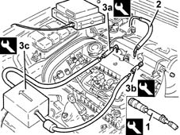

1056BI Check fuel consumption
- Path
- Test > 10 ENGINE > 1056 PETROL INJECTION SYSTEM > 1056B multi-point injection system (mpi) > 1056BI Check fuel consumption
- Kind
- test / check procedure
- Applies to
- engines: 1.6 TS , 1.8 TS; all production periods
- Interactive page
- https://sloeber94.github.io/elrnDB-a156/en/#/3239129
Applies to: engines: 1.6 TS ; all production periods
Disconnect the fuel return and supply pipe from the fuel distribution manifold (collect the fuel which comes out) and connect the two pipes for the tool to the tester.
 | Name | Country |
|---|---|---|
- | Flowtronic | 1.826.008.000 |
Carry out a fuel consumption test on the road in accordance with Directive 93/116 CE (litres x 100 km):
- URBAN CYCLE - includes a cold start, following by a simulated varied urban journey;
- NON-URBAN CYCLE - includes frequent accelerations, in all gears, simulating normal non-urban use of the vehicle. The speed varies between 0 and 120 km/h;
- The average combined consumption comprises 37% urban cycle and 63% non-urban cycle.
Check that the values measured correspond to those given in the 'GENERAL INFORMATION AND TECHNICAL DATA'.
Applies to: engines: 1.6 TS ; all production periods
Connect the tool to the distribution manifold bleed valve; discharge the fuel pressure and remove the tool.
| Name | Country |
|---|---|---|
1 | Rapid connector | 1.870.684.000 |
Disconnect the fuel supply pipe from the distribution manifold.
Fit the tools (3a) and (3b) on the equipment (3c) complete with tester.
| Name | Country |
|---|---|---|
3a | Connectors kit | 1.860.955.003 |
| Name | Country |
|---|---|---|
3b | Connectors kit | 1.860.955.001 |
| Name | Country |
|---|---|---|
3c | Flowtronic | 1.826.008.000 |

Applies to: engines: 1.6 TS ; all production periods
Carry out a fuel consumption test on the road in accordance with Directive 93/116 CE (litres x 100 km):
- URBAN CYCLE - includes a cold start, following by a simulated varied urban journey;
- NON-URBAN CYCLE - includes frequent accelerations, in all gears, simulating normal non-urban use of the vehicle. The speed varies between 0 and 120 km/h;
- The average combined consumption comprises 37% urban cycle and 63% non-urban cycle.
Check that the values measured correspond to those given in the 'GENERAL INFORMATION AND TECHNICAL DATA'.